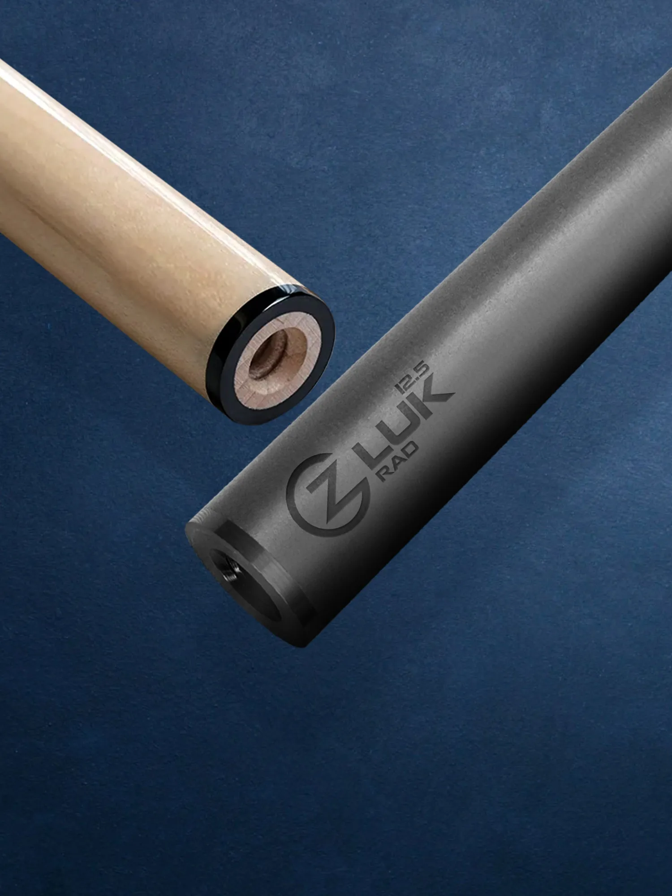
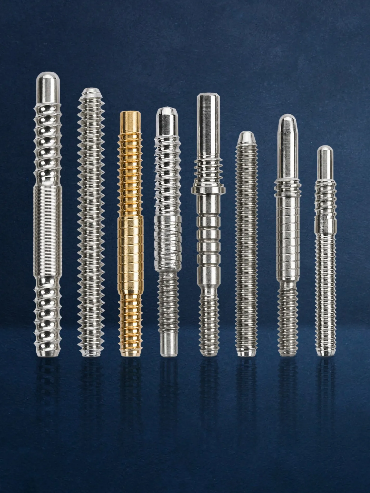
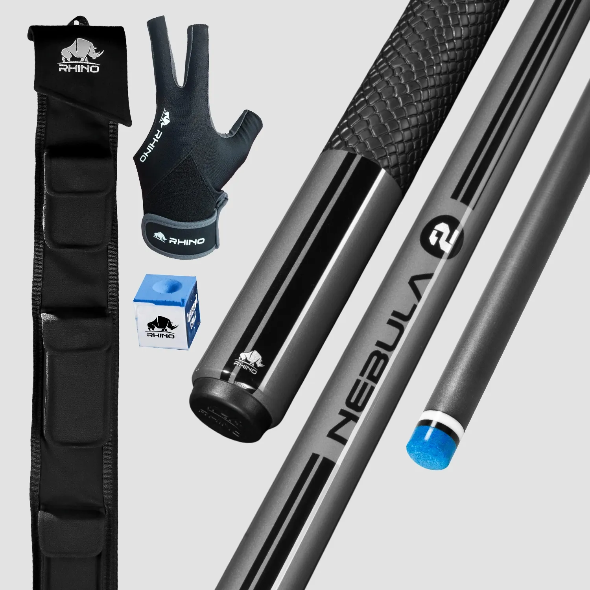

Editor's guide
HOW TO CHOOSE THE RIGHT SHAFT
Diameter, taper, joint and feel — explained in one practical framework.
Build your shortlist around your stroke and existing cue instead of choosing from specifications alone.
EXPLORE THE GUIDE →CUEBOTS Journal
Practical buying guidance, compatibility notes and care routines for players who want more confidence from every setup decision.
Editor's guide
Build your shortlist around your stroke and existing cue instead of choosing from specifications alone.
EXPLORE THE GUIDE →Latest knowledge

Comparison
Compare feedback, deflection, maintenance and long-term consistency.
READ MORE →
Compatibility
Recognize common joints and measure your current setup correctly.
VIEW DETAILS →
Care
A simple routine for shafts, tips, joints and cases.
READ THE CHECKLIST →